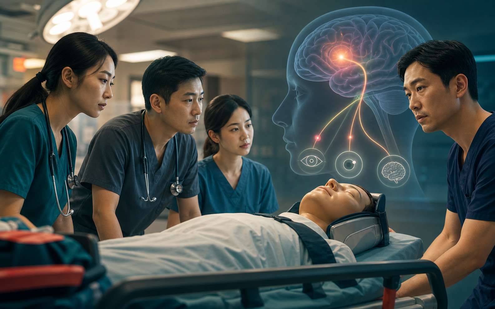

观察线索Observation cues
情境图用于看“变化从哪里被发现”，趋势板用于看“变化是否持续”。The scene shows where change is noticed; the trend board shows whether it persists.
source_required聚焦意识变化、瞳孔、颈椎保护、气道风险和团队报告语言。页面只训练观察与复评，不写插管阈值或药物方案。Focus on mental-status change, pupils, c-spine protection, airway risk, and team reporting language. The page trains observation and reassessment only, not intubation thresholds or medication plans.
把颅脑损伤学习从“诊断名”转成气道、颈椎保护、神经变化和复评路线。Turn TBI learning from a diagnosis label into airway, c-spine, neurologic change, and reassessment route.

情境图用于看“变化从哪里被发现”，趋势板用于看“变化是否持续”。The scene shows where change is noticed; the trend board shows whether it persists.
source_required
新信息是否同时改变 A/D 风险、颈椎保护语言和下一信息需求。Whether new information changes A/D risk, c-spine language, and the next information need.
pending_clinician_review把机制、连续神经查体、全身生理、影像变化和团队升级放进同一时间轴。Place mechanism, serial neurologic examination, systemic physiology, imaging evolution, and escalation on one timeline.
分别记录睁眼、语言和运动反应，比较双侧瞳孔大小与反应、肢体差异、抽搐、躁动/嗜睡和气道分泌物处理能力；先排除镇静、低氧、低灌注和低血糖等混杂因素。Record eye, verbal, and motor responses separately; compare pupils, limb asymmetry, seizure, agitation/drowsiness, and secretion handling. First consider confounders such as sedation, hypoxemia, hypoperfusion, and hypoglycemia.
头颅 CT 用于识别出血、占位效应、骨折和其他急性改变；一次阴性 CT 不能否定全部 TBI，也不能替代神经状态持续恶化时的重新评估。Head CT identifies hemorrhage, mass effect, fracture, and other acute changes. A negative CT does not exclude all TBI and cannot replace renewed evaluation when neurologic status worsens.
同步维持氧合、通气和灌注，保护颈椎，及早识别可逆全身原因；神经恶化、瞳孔改变或影像高风险信息应推动高级监护、神经外科和重复影像等团队升级。Maintain oxygenation, ventilation, and perfusion while protecting the cervical spine and correcting reversible systemic causes. Neurologic decline, pupil change, or high-risk imaging should prompt team escalation to advanced monitoring, neurosurgical review, and repeat imaging as appropriate.
“与上次相比，E/V/M、瞳孔、局灶体征、气道保护、氧合和循环分别怎样变化？”“Compared with last time, how have E/V/M, pupils, focal signs, airway protection, oxygenation, and circulation changed?”
把躁动只归因于“不配合”，或看到一次正常影像后停止观察；两者都会漏掉动态恶化。Attributing agitation to noncooperation or stopping observation after one reassuring image can both miss evolving deterioration.
报告基线、最近一次变化、时间点、已排除的混杂因素、当前保护状态以及下一次复评责任人。Report baseline, latest change and time, addressed confounders, current protection status, and ownership of the next reassessment.
记录意识、语言、瞳孔、运动反应及其与前次的差异。Record mental status, voice, pupils, motor response, and difference from prior.
用短句同时表达 A/D 风险和颈椎背景，不使用未经确认的诊断标签。Report A/D risk and c-spine context without an unconfirmed label.
说明影像、上级团队和转运信息分别回答什么、仍留下什么未知。State what imaging, senior support, and transfer information answer and leave unresolved.
比较新旧神经状态并重新明确主导风险和下一次复评责任。Compare serial neurologic status and restate dominant risk and reassessment ownership.
CLAIM-MINI-TBI-ACS-TBI-SOURCE连续神经查体、全身生理与继发性损伤、影像边界和团队升级框架已按 2024 ACS TBI 最佳实践核对；具体监护与治疗流程仍需院内专家审核。Serial neurologic examination, systemic physiology and secondary injury, imaging limits, and escalation were checked against the 2024 ACS TBI best-practice guideline; institutional monitoring and treatment pathways still require expert review.
指南已核对 · 院内终审待完成Guideline checked · institutional sign-off pending